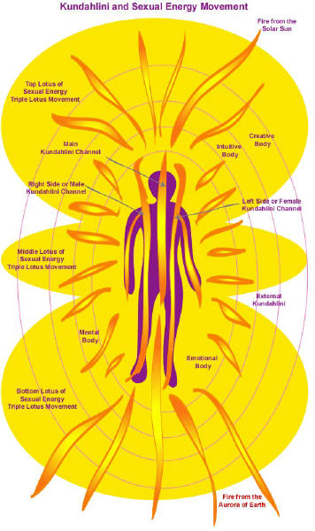
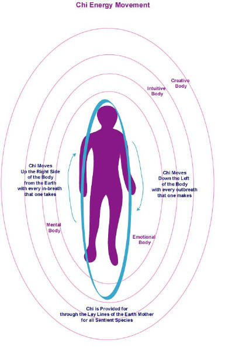
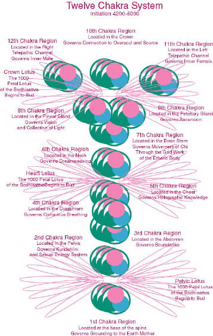
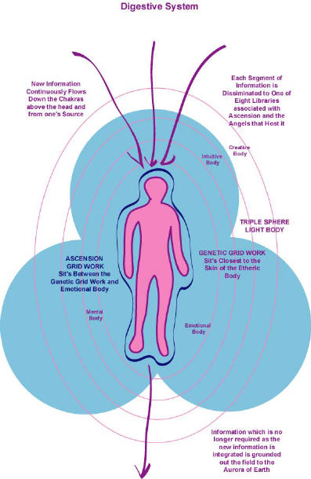
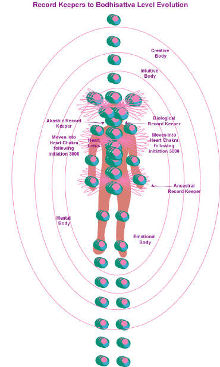
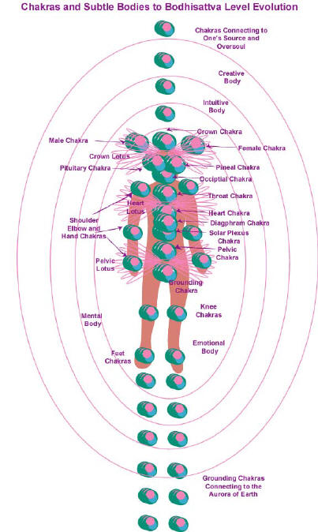
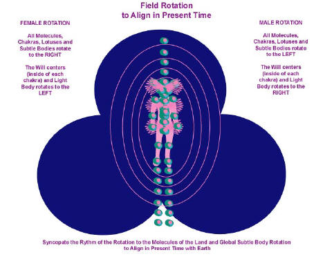
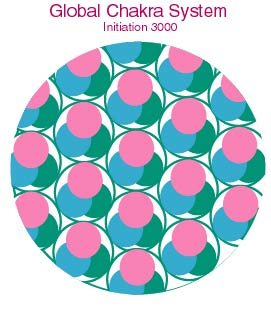

Etheric Poison and Nuclear Poison
The Tao through Karen Danrich “Mila”
February 26, 2003
Dear Beloved Ascending Human,
Early this year, it was determined that through a manipulation of the dark, an entire segment of disease karma was schismed over by the collective ascending human population in the new consensus. This karma involved the dynamics of etheric poison. We will discuss these dynamics in great detail today so that those who are ascending may begin to address this patterning within for the purposes of transcendence.
The cause of the schism and how this was orchestrated will be discussed in the next Great Central Sun Transmission, but let us suffice to say that it was an angelic manipulation, and has caused a turning of angel souls upon earth. The turning of creation, which began in December, is officially complete at this time. Fewer than 18% of the souls that had ensouled Earth remain. New souls have descended, and in particular the Tao from outside of time and space and form and the mirror in which your creation resides has fully descended to embody the aurora of earth. The feminine aspect of the Tao (the Lady Tao) now begins her descent, which shall take roughly 6 months to fulfill upon. This shift shall begin to balance the male and female energies more fully upon Earth as it is completed assuring that the dream for global ascension becomes a viable future.
Mila has over the years channeled information from many sources, and continues to channel the nature kingdoms and consciousness of Earth, otherwise known as the Earth Mother. She does so to make available the information to humans who perhaps have a less clear ability to attune to the dreamtime occurrences in Earth’s governance and experience of global ascension. Let us simply say that nature and Earth as a physical vessel is overjoyed at the presence of the Tao, and pleased that the shift in souls dancing with earth has been a relatively easy change to orchestrate.
ETHERIC POISON
Etheric poisons are tones of creation that shut down the energy movement of a field, light body, chakra system along with the movement of energy within the grid work of the etheric body. In other terms, etheric poisons are destructive tones of creation. Over time and in the choice to cause certain species to go extinct, poisonous vibrations were utilized upon earth. The most poisonous tones come from your glaciers. The glaciers contain all that remains of a dumping of toxic substances frozen into etheric gas resembling sulfur dioxide that occurred 6 million years ago due to Arcturian cause. Within the gas were frozen entities of the most dangerous proportions that had shattered the Arcturian solar system. These were flash frozen with potent etheric poisons. Later the secret governance of earth drew upon such poisons to cause extinction of two species.
The first species earth’s secret governance chose to cause the extinction of was the Dinosaur kingdom. This kingdom was drawn from a parallel creation genetic blueprint hat was silica based in nature. Silica life form is non-compatible with carbon-based life form, and there is no means upon Earth to break down such a cellular structure. It is for this reason that dinosaur remains known as tar do not break down over time. The presence of the Dinosaur kingdom caused the first known toxins to become prevalent upon Earth from a living species. It was for this reason that earth’s secret governance chose to cause the Dinosaur kingdom to go extinct.
The presence of the Dinosaur Kingdom was a dream broadcast upon Earth by the creator-souls of Alpha Centauri, also home to the Grays and Reptilians. First, Earth chose to stop the broadcast of the dream by redirecting it to another creation. Then poisonous tones of creation were administered to the Dinosaurs en mass that began to cool and shatter their fields. As a reflection of the poison in the etheric, a meteor hit earth’s surface shortly thereafter that cooled the Dinosaurs en mass in the physical. Being cold blooded, the Dinosaurs died within a few weeks due to a global cloud of dust emitted from the meteor crash that blocked the sun enough to cool the temperature below where their species could continue to subsist.
FOSSIL FUELS
The toxins associated with Dinosaur remains are known as fossil fuels in present time. Fossil fuels exist as a tar-like substance that never decomposed. The reason dinosaur remains cannot decompose is that they are silica based, and the entire global system for decomposition is only been devised to break down carbon based cellular structures. Interestingly enough, the Pleiadian Annanuki were also silica based in form, and the slaves that they bred and their lineages that are still present in human form are half silica and half carbon in nature. Such humans that are associated with the Anu and their slaves will also have portions of the form that fail to break down after death unless the form is cremated. Fire can burn off silica-based substances; much like one ignites fossil fuels for the purposes of combustion.
Earth in her ascension is anchoring new tones of creation that shall decompose silica-based substances into the future. At this time such tones are already available in the molten lava and magma of Earth’s core. Therefore any remaining tar from dinosaur remains shall decompose as all of earth ascends into a ball of fiery magma. This is anticipated some 1000 years into the future in Earth’s continued global ascension and as she enters the fifth dimension in full.
Interestingly enough, half silica-based humans became enamored in recent centuries with harvesting the remains of another prehistoric silica based animal. One can say in this that perhaps like attracts like. However fossil fuels as they combust produce an emission which is harmful to earth and humans alike known as carbon monoxide. Carbon monoxide attaches to red blood cells deeming them useless to their job, which is to carry oxygen and sugar to the cellular structure. Those living in regions with high emissions or in jobs that expose oneself to such are oxygen deprived, which more rapidly causes the form to deteriorate and age. It is for this reason that we suggest that ascending humans move out of the cities and into the country, which is less polluted.
At this time, the inner earth peoples are beginning to add certain substances to the air and water to cancel the carbon monoxide pollution that is killing Earth, and to assist in balancing the overly acidic waterways that occur as the rain collects the carbon monoxide and dispenses it upon the plant life. It is anticipated that these substances will pervade all waterways in roughly 8 years and assist in bringing the oceans in particular into a state of balanced pH. In the article “How to Retain One’s Health in Ascension”, pH was pointed out to be an underlying problem in association with disease and decay; that regions in the form that decay will either be overly acidic or overly basic in pH.
The body requires a specific pH to sustain its health and well being as does Earth and each species therein. Ascension brings about the gradual correction of the proper pH for each part of the form the further that one climbs in genetic materials. Earth is on target to balance her pH to enough of a degree no later than 2008 for entry into the next phase of star gates. Imbalances in pH upon her global surface affect the energy movement in such a manner that imbalance of field results. The more that the pH of Earth becomes congruent to supporting life, the more greatly balanced her global field shall become; and this is a requirement to continue to build in heat and vibration in ascension in the decades ahead. This is also so for the human form in ascension.
BODY TEMPERATURE AND DISEASE
In addition to pH, the body also requires a specific temperature to assure the continued life of the cellular structure. Temperatures that run too high tend to fry the cells and combust the molecular structure underlying life, which will cause degeneration of the associated region. In Chinese Medicine, one would associate such a region as having too much “fire”. Temperatures that run too cold begin to rot or decay. Why is this so? The body is filled with bacteria and maggots from birth designed to decompose the form upon death. If any portion of the form drops enough in temperature, the maggots and bacteria begin to go to work decomposing the associated region of the form thinking that it has died.
In extreme cases, one knows this as leprosy, in which the temperature of portions of the form drops so low that the region begins to rot as if the body had died, and sometimes rots until a finger, hand or entire limb falls off. Although one can treat such a physical manifestation with antibiotics that kill the associated bacteria, as understanding the underlying cause of why the region has gone “cold” may or may not suffice to correct the problem in the long haul. In a recent article in the European version of the Herald Tribune, Mila read a short article about how leprosy was on the rise in the US with 7000 known cases diagnosed, and many more probably unknown. The symptoms begin with a red and white rash, and many doctors apparently do not realize that these are the early symptoms of leprosy, having thought the disease conquered by modern medicine.
Why is leprosy on the rise in the US or anywhere in the world? The cause is ultimately unconsciously harmful patterns in which entire sections of grid work are shattered and removed in the etheric body. Leprosy plagued the Hawaiians as the early white settlers moved to the islands. The white settlers cursed the Hawaiians removing entire hands, arms and legs or feet of their etheric grid work; the Hawaiians then developed leprosy in rather large numbers. As grid work is stripped, the energetic lay lines required to carry the element of fire and chi to any region of the form go missing. As this occurs, the region cools in temperature and the bacteria and maggots designed to decompose the form go to work, and the region begins to rot.
AGING AND LOSS OF GRID WORK
Leprosy is an extreme example of what occurs in the loss of grid work. The Tao has determined however that all aging is the result of the loss of grid work over the course of any given life. Over time, humans form attachments to more and more people, places, objects and possessions. As this occurs, grid work moves outside of the form into the attachment; and the associated regions of the form cool in small pockets and begin to rot with the bacteria and maggots decomposing the form as if it had died. Over time, more and more of the form rots from the inside out until one or more major systems go dysfunctional leading to death.
It is etheric poison or destructive tones of creation embedded into the grid work of the form that underlies the cooling body temperature and decay. As the etheric grid work is removed in association with leprosy or attachment, poisonous etheric serpents move in which emit a tone of creation in which no energy moves, not even the molecular structure. Etheric poison is administered through serpents that contain tones of destruction that do not allow the energy to move from one portion of the grid work to another. Such serpents crawl into the grid work as the lay lines move outside of the form in what is known as attachment.
In ascension, one releases the attachment and reweaves the grid work internal to the etheric body; however one must also move out the serpents carrying poisonous tones of creation in order for the form to resurrect what has decayed to the crystalline cellular structure. For those that are diseased in any portion of the form, the entire etheric organ, gland or system may be embedded with poisonous serpents. Releasing the karma for how such serpents came to be in any region allows for the possibility of a full recovery. (See "The Anatomy of an Ascending Energy Field" for more information on the etheric vessel in ascension.)
Form is constructed of serpents that are light and dark interwoven into a tapestry known as the etheric body, chakra system, light body, subtle bodies and auric field. Serpents weave form, angels direct the serpents based upon the holographic blueprint received, and soul constructs and repairs the holographic blueprint in ascension. In earlier materials, the import of having the right nonphysical beings doing the right job was spoken of.
SCAR TISSUE AND ORIGINAL KARMIC CAUSE
One must get at the original karmic cause of how the poisonous serpents arrived into one’s etheric body in order to release the karma, and this may be the tricky part for those that have come ill over time. Often the original cause may not be known; or may be contained in the scar tissue in the core of the decay and disease. How can one resurrect the region enough to get at the records stored in the scarred cells of the form if diseased cells that must be resurrected first surround it? This is the core problem for those desiring to ascend out of any disease. The answer shall be for those who are not diseased but are related in ancestry to uncover the karmic cause through their ascensions.
This has been the goal of Mila and Oa along with those in their Group Mastery Program, to get at the original karmic cause of each disease, and release it in the collective ascent of their school. Then the karmic cause is already known, and those with physical ailments have therefore an opportunity to ascend out of disease. The original cause of many diseases involves the patterning of etheric poison. It is for this reason that the dark forces augmented an attempt to cause ascending humans to fail to release this karma. In so doing ascension would ultimately cease upon Earth, as the karma for poison is also associated with each fall in consciousness of both Earth and the human species alike.
ORIGINAL KARMIC CAUSE OF POISON
The karma for poison is a sad thing indeed. The secret governance of earth that had overrun and replaced her ensouling factor some 6 million years ago had been involved with the extinction of another creation known as Albyreon. The creation had gone extinct due to human falls in consciousness. As humanity was seeded upon Earth, and in particular the grand masters from Sirius with the large heads and great spiritual awareness, the secret order of earth chose to cause them to go extinct, just as they had caused the dinosaurs to go extinct. Planes for extinction were set up, and destructive tones of creation administered to human fields in the form of poisonous serpents.
The serpents entangled with the Grand Masters fields slowing the rotation of chakras and subtle bodies down. As a large solar sized field slows, it begins to wobble, and in the wobbling the etheric body begins to tear or rip apart. Then more poisonous serpents were administered to the etheric body, shutting off entire regions of all energy flow. Each of the 48 Grand Masters died within 8 months and in great pain as a result of the poisonous serpents. Humanity also lost their spiritual leadership and governance as a result.
Dolphins and whales held open time rifts from a potential future upon Earth in which the family of Anu or Annanuki would one day arrive some 6000 years into the future; it was through the Family of Anu that the poisonous serpents flowed from the Pleiades. Because the incident was in the future and a potential future that the Grand Masters could not perceive, they could not offset the manipulation and all died. This is the original karmic cause of the presence of poison in the human species upon Earth.
Dolphins and whales are not innocent. We have written extensively about how the dolphins and whales were used to destroy the early human settlers and grand masters from the desire to be the only conscious species upon Earth. One would say that the dolphins and whales wanted to be the supreme species in this. However their destructive karma rolled all the way around the karmic wheel in recent centuries after which humans began to hunt and kill the dolphin and whale kingdom. The original cause of how dolphins and whales had destroyed humans had long been forgotten, leaving them feeling victim to their circumstance. As the original cause was uncovered, the dolphins and whales now understand why they have had viciousness targeted at them via human sources; it is their karmic return. As the karma is forgiven in full, such a dance shall cease into the future, and both fully conscious species can learn to live in harmony and unity together.
HOW HUMANS POISON ONE ANOTHER
After the ice shields collapsed, the red race lost the ability to consciously exit the physical plane. Up until this point and time, if a body was too diseased, the human could choose to go to sleep and not awaken, dying in dreamtime due to conscious choice. As humans lost the ability to consciously die, embodiments that went in great pain due to disease sought a way to die due to the pain that the form was in. For existing in a form that is diseased is a painful experience and one that soul did not enjoy.
The idea then occurred to soul to poison one major system of an already diseased form to a point of complete failure, and then the form would die and the pain cease. Agreements were constructed with friends and family nearby the diseased person to poison such a system until the form could then exit the physical plane due to system failure. Soul apparently knew no other way to end the life of those in pain due to disease. Such agreements to poison one another to death appear to have begun to be constructed some 38,000 years ago (152,000 human years) in human history.
Such contracts to poison one another carry forward to this day between humans of ancestries with such agreements from ancient times and underlie most disease. Such contracts became so numerous over time that humans today are literally poisoning one another in their unconscious association. Let us give one a present time example so that each will better understand.
Let us say that 38,000 years ago, one’s ancestor was diseased. An agreement was struck with family members and friends to poison the liver until it was so dysfunctional that the body would die. This took only 3 years, but now the form could exit the physical plane and move out of pain. Now in present time, one crosses paths with those related to the ancestry that poisoned one’s ancestor’s liver in ancient times. Again poison is administered to one’s liver in the form of serpents carrying destructive tones of creation that flow into the etheric grid work. One crosses a few more of such ancestries, and more and more poison is administered to the liver. Over time, one develops a liver disorder. Now the doctor and nurses and practitioners treating oneself also hold such lineages, and once again the liver is poisoned, and this time one dies. So it is for many a disease in human form.
The agreements for this type of “assistance to die” are so great that current day hospitals, doctors and nurses often play a role. Hospitals are the best place to go if you wish to die. There are entire etheric machines to drain off chi for a rapid death of those that the doctors and nurses cannot save; furthermore grid work and information is then transferred from those who are dying onto those who the doctors and nurses can save, who then may go on to check out of the hospital. Such doctors and nurses and the hospitals send large doses of etheric poison into those that require a rapid death, which shuts down the energy flow in such a grand order that the body goes into its death drill and emits the death hormone to each and every system, organ and gland. The death hormone then shuts down the life of all cells within the form in roughly 20 minutes, and the form ceases to breathe. The death hormone for all intents and purposes is a physical plane reflection of etheric poison.
Any human that is diseased may recover through ascension by releasing the underlying agreements for receiving the etheric poison that has been administered perhaps by countless people in one’s life experience. As the poisonous serpents leave the etheric body, and the attachment is also released, the grid work can be rewoven within, and enough fire and chi provided to resurrect the decayed and diseased cellular structure to the crystalline form. The crystalline form is healthier than any other structure one has known in this lifetime, as it is regenerative in nature. Therefore one can recover from disease through ascension.
NUCLEAR POISON
There is a second form of poison in your human history that we shall speak about and also is associated with certain diseases in present time. Such poison does not cool the body or freeze energetic movement causing it to rot, but rather heats up the system too much causing the molecules to combust. In extreme cases of molecular combustion, one knows this as the current disease of MS or Multiple Sclerosis, in which the entire form collapses in upon itself, withers and dies. The karma for MS or any other disorder in which too much heat is causing the molecular structure of the organ or gland to combust and collapse in upon itself is associated with nuclear poison and serpents that carry radioactive tones of creation.
Serpents that hold a radioactive charge carry nuclear poison. All nuclear poison karma goes back to the nuclear annihilation of the Family of Anu roughly 30,000 years ago (120,000 human years). Roughly 1/3 of the world was blown up in an instant into sand in the war of the Anu through nuclear armament. The remains of such sand exist in the Sahara and Gobi Deserts along with under the Atlantic Ocean. As the physical was blown apart, the serpents that weave the positive and negative grid work and collective energy field of 1/3 of earth were suddenly freed and knew not where to go; such serpents crawled into the grid work of every remaining living thing upon earth causing nuclear poisoning; for the serpents were charged with radiation due to the nuclear fallout that shattered them apart.
For those nearest the explosions that survived, they died a long slow death thereafter not much unlike MS as the molecular structure slowly combusts and collapses inward, leading to a slow withering away sort of death due to the radioactive serpents that invaded the field. Open wounds and sores were also prevalent as the radioactive serpents crawled between the etheric skin and genetic grid work, causing the skin to combust. Those that suffer from psoriasis or eczema are experiencing such karma in present time. As the radioactive serpents are removed between the genetic and etheric grid work as the associated karma is released, the skin will have an opportunity to recover.
In addition to nuclear poisoning, the radiation altered the DNA of all life upon Earth. For the radioactive serpents that moved between the genetic grid work and etheric grid work caused the DNA to spiral whereas all DNA had been held in a straight tube of information before the nuclear annihilation of the Anu. As the DNA spiraled, it frayed, causing genetic information to be lost and attachment between humans to form. The frayed ends of the DNA interconnected with one another. This caused the etheric blueprint to also cause etheric bodies and energy systems to interconnect between humans along with all species upon Earth. In so doing, humanity not only dropped in consciousness, but fell into greater levels of pain and disease than had ever occurred prior to this time in history. Sadly, the nuclear annihilation of the Anu caused the single largest drop in consciousness of all species upon Earth in a single generation.
The karma for nuclear poison has recurred 18 times since the annihilation of the Anu. Each time, a portion of Earth was blown to bits again, unleashing radioactively charged serpents to crawl into those remaining alive nearby. Each time, more radioactive serpents entered the field, causing more DNA to fray. The last experience that was large enough to cause a fall in consciousness occurred 10,000 years ago in the fall of Atlantis. The nuclear annihilation caused the DNA to drop from roughly 5000 strands of remaining information to 2 strands, leaving humanity without enough consciousness to recall their history. Humanity fell into the greatest level of barbarism thereafter, returning to hunting, gathering and living in caves.
As humans choose to release the karma for the various time periods of nuclear fallout, the DNA can be restored and the form can move into a state one’s ancient ancestors existed within which is crystalline and regenerative in nature. The ascent to 1800 requires the release of karma from the nuclear annihilation of Atlantis some 10,000 years ago (40,000 human years). By and large, such an ascent may be enough for many humans to recover from disease. The ascent to 3000 requires the release of karma from the nuclear annihilation of the era of the Mahavishnu some 18,000 years ago (72,000 human years). One can think of the Mahavishnu as the Egyptian Pharaohs that held enough genetic materials from the ancient grand masters to construct a much larger head. The ascent to Bodhisattva or 6000 strands requires that one release the karma for the nuclear warfare of the Annanuki or Greek and Roman Gods, which occurred some 30,000 years ago (120,000 human years.)
18 DISEASE PATTERNS DEFINED
We now go into greater detail with the energetic dynamics of disease and what to intend in order to transcend such patterning. For those who are ascending, although one may be in good health more or less from the current set of human standards, one still holds these patterns as all ancestries have experienced nuclear annihilation or poisoning at one time or another. In ascending beyond such patterning, one will be less likely to ascend into disease.
For those who are diseased, there is an opportunity now to ascend into a recovery. The karma for disease is anticipated to be completely mapped out no later than July of this year, and is a part of the goal of the Summer International Ascension Conference event. Perhaps more shall choose to join us and contribute to our collaborative purpose.
1. MOLECULAR LOSS
Underlying many diseases is a loss of molecular structure. Molecules can combust due to the presence of radioactive serpents causing the grid work to collapse in upon itself leading to disease within the associated part of the form. Molecules can also be bartered away in karmic encounters with “molecule brokers”. Molecule brokers unconsciously strip one party of their molecular structure and sell it to another.
For those with collapsing molecular systems, molecule brokering is often how a practitioner brings about a remission or recovery; molecules are taken from another or many others and pushed into oneself and in the regions that are collapsing, allowing the field to properly hold the grid work again, causing a recovery. However it will also cause those that the molecules were appropriated from to become ill in parallel manner over time leaving the one that recovered with karma. The karma causes the reverse of the pattern in subsequent generations, and the wheel simply goes around and around without end; one ancestry recovering and another becoming ill as they have sacrificed of their molecular structure to save another.
In ascension, one does not require the molecules of others in one’s field, for this only causes discord in the long haul. Molecules rotate in a particular vibration that is sincerely one’s own signature. Molecules of another signature are discordant unto oneself, and allow others to attach into one’s field, which then becomes the vital pathway in which one can lose information or moving energy systems. Ascending initiates learn to rebuild their molecular structure from their own genetic and holographic blueprint to be entirely of one’s own signature, resurrecting over time all that has been lost. The bottom line is that one need not barter with the dark for their molecular structure or health; one simply requires ascending and reconstructing and reconstituting any part of it that has gone missing or combust over time.
Energy can be resurrected and reconstituted just as one resurrects the cellular structure of the form. As one releases karma for nuclear poisoning, one can then push out of the etheric grid work the radioactive serpents. As the radioactive serpents leave, the molecules will cease to combust. One can then resurrect and reconstitute all molecules. As the molecules are in place, new serpents sitting in the Language of Light can be called in to reweave the grid work. As the new grid work is in place, it will provided enough chi so that the cells associated that have decayed can be resurrected into the crystalline form. This is how one may ascend out of disease caused by molecular loss, whether it be a bartered loss or loss from combustion.
In a bartered loss, one will have serpents in the associated part of the form that send molecules to another that one has karma to save. As one releases the original karmic contract to save another, the serpents in one’s grid work that send molecules to another can be removed and replaced by serpents holding the Language of Light tones of creation. As this occurs, the molecules can be reconstituted and not bartered away again, allowing enough chi to be available to the associated region of the form to resurrect the associated diseased or decayed cells.
How does one command all of this? One intends to ascend, first and foremost. Then one may begin to intend to uncover the original cause underlying any diseased or compromised part of the form. During dreamtime, one will research the karma associated. One can command just before falling asleep each night that one research the karmic cause underlying diseased or problematic areas of the form, release the karma, and reconstitute the molecular structure and grid work. The physical commands the nonphysical, and over time and with such ongoing intention, one can ascend out of any disease.
SUGGESTED INTENTION: “I intend to retrieve all molecules lost over time in my ancestry and my current life experience. I intend to release all karma that causes me to give my molecules to another and all patterns that cause me to believe that I must save another. I intend to get to the original cause of the molecular loss of any part of the form that is diseased or could become diseased over time in my continued ascent.”
2. THE ACCRUAL OF MATTER OR MOLECULES
Matter is molecular material. Matter can be lost, but it can also be gained. Deformity such as hump back or growths of any kind including cancerous growths are the result of acquiring matter or molecules of others rather than losing them to others. Many humans have agreements to pass on matter to others from one region, and gain molecules or matter in yet another; generally an unconscious “matter or molecule broker” as we spoke of above will be involved in the transaction.
The agreements to take upon oneself matter for another originates in the group ascensions conducted during the era of the Mahavishnu and amongst the Egyptian Pharaohs. The Pharaohs attempted to ascend and utilize the remainder of the Pyramids for such a purpose. Alas their ascensions were incomplete with much of the form combusting instead of ascending on to the next dimension. The combustion accentuated the thought-form of nuclear fission causing another major nuclear war between the east and the west at the end of the era of the Mahavishnu. This lead to a great enough fall in consciousness that any humans with the larger heads, brain cavity and awareness ceased to be born thereafter.
The ascensions of the Pharaohs involved the uniting of many human fields by interweaving the molecular structure to cause a group ascent. Alas the grid work moving outside of the form only left an uneven energy flow; and when the kundahlini ignited to ascend, the uneven flow caused combustion; in the worst cases with entire heads, arms, legs or other body parts left behind in a pile of ashes. As a result of such ascensions, the Pharaohs eventually ceased to practice ascension, as the remains were too disturbing. However the anchoring of fission thought-form had already occurred ultimately leading to nuclear warfare and another fall in human consciousness.
In the group ascent, molecules of one moved into another. One will find the underlying reason one gives molecules to another, or takes upon oneself matter of another, each of such an exchange is associated with such ancestral experiences in the ascension temples of ancient Egypt. Release the karma, and one will have an opportunity to return matter that is not one’s own, allowing any growth to be dissolved through ascension, or retrieve matter that belongs to oneself, augmenting one’s ascent.
For those who tend to be excessively overweight or obese, one may be acquiring matter from many others and storing it in one’s gird work; as the original cause is released, the matter can be returned to those that it belongs to and one will come down to the appropriate weight for one’s ascent. For those that tend to be too thin in ascension, one will find that one is losing molecular material, and in the retrieval, one will expand enough to hold one’s boundaries in ease.
Ascension creates an expansion of form as all molecules are resurrected and reconstituted. However there is a catch; one wishes only one’s own molecules, not a load of molecules from others, as the molecules of others may lead to enough discord over time that one ascends into disease. Therefore the conscious intent to only retain one’s own molecules only is perhaps a good one for ascending initiates to maintain.
There is such a great thought-form at this time that “thin is healthy”. Thin has so few molecules that they are barely alive beloved, and cannot maintain an expanding field. Embrace the expansion of form to whatever size one has become, and understand that this is necessary to support a global sized field, chakra system and light body of an ascending human.
SUGGESTED INTENTION: “I intend to return all molecules gained over time in my ancestry and my current life experience that belong to another. I intend to release all karma that causes me to take molecules from another. I intend to get to the original cause of the molecular gain of any part of the form that is has caused a growth, excess weight gain or deformity in my ancestry, or could cause such in my continued ascent.”
3. LOSS OF GENETIC RECORDS
Decay or a problematic system can be the result of a loss of genetic records. Whereas molecular loss causes a distortion from the inside out due to collapsing grid work, the loss of genetic records causes a distortion from the outside in. Genetic records sit in the genetic grid work on top of the etheric skin. As records go missing, the angels and divas over time begin to transcribe the blueprint in distortion, as the memory of how to retain the blueprint distortion free has been lost. This leads to a distortion in the form, which results in one form of disease or another.
Scientists today have found the genetic basis for countless diseases, and they are accurate more or less in what they have ascertained. However ultimately the genetic encoding was lost which then over time resulted in the disease. Such diseases include most forms of cancer, epilepsy, arthritis, lupus, Epstein bar, Alzheimer’s, heart disease, diabetes, immune dysfunctions, and the dysfunction of most any system that fails to do its job to sustain the life, health and well being of the form. Release the original karmic cause, retrieve the genetic encoding, and there is the distinct possibility of a complete recovery through ascension.
Retrieval of missing genetic information is an ongoing part of the process of ascension. As one releases karma from one’s past ancestral experience where the encoding was lost, the information can be recovered and then rewoven into the ascension grid work. As this occurs, it is only a matter of time before the new genetic encoding steps down into the genetic grid work and then physical form.
Missing genetic encoding is generally associated with nuclear poisoning. As the radioactive serpents moved in between the genetic grid work and etheric skin of those remaining following each nuclear fallout, the genetic information became compromised. The radiation caused the genetic encoding to spiral, and in the spiraling, much of the information frayed. The fraying DNA caused a fall in consciousness in each subsequent generation following nuclear fallout.
Where the DNA frayed, the angels transcribing form no longer had any blueprint to follow. The result was scar tissue, which is a hardened form of cellular mass that cannot receive oxygen or sugar, and cannot detoxify its waste, and becomes increasingly hardened the longer that the form lives. Earth estimates that the average human born at 2 strands is 80% scar tissue. Ascension brings about the resurrection of scar tissue as the lost genetic information is retrieved and the karma for nuclear genetic deterioration is released.
As one releases the karma for nuclear fallout in one’s ancestry, the genetic materials that had been lost in the fraying are retrieved. In so doing, one builds bundles of genetic materials that no longer spiral, but sit in a straight cylinder. The ascent to 3000 builds one of twelve cylinders necessary to a fully conscious form. The ascent to 6000 builds a second cylinder of information. Understand that it only requires two cylinders to construct enough of a regenerative form that one will cease to age through ascension and can ascend out of disease.
SUGGESTED INTENTION: “I intend to retrieve all genetic materials lost in nuclear fallouts throughout my ancestry. I intend to release the original cause of why my genetic material frayed. I intend to rebuild by genetic material to be a complete cylinder of information and crystalline in form at each juncture of ascension.”
4. LOSS OF GRIDWORK
In addition to molecular brokering, there is also grid work brokering, which involves the movement of grid work from one party to another. As the gird work is moved, the associated region of the form ceases to receive enough chi and begins to decay as it cools due to the bacteria and maggots that digest the form thinking that it has died. The molecules may or may not have been moved in addition to the grid work, and although they may continue to spin, the chi does not have a pathway to flow through leading to decay of the associated cells.

Any grid work that is lost in a daily or weekly karmic encounter will interfere with this process. If one region fails to have enough of its grid work re-woven in ascension, over time the region will become diseased. This is how Mila and Oa have ascended in and out of cancer 3 times in their ascent to date; portions of their grid work failed to be rewoven to enough of an extent to hold the proper body temperature in certain regions of the form. Sometimes the problematic region involved karma that could not be released as the original cause was not understood. Often their travels each year take them to land in which the original cause can be uncovered and then released. This too is how they ascended out of their cancer.
So this is also so for each ascending human. However each human is also related to other ascending humans around the globe. One can connect in dreamtime to humans associated with one’s ancestry from any part of the world, as perhaps one cannot afford to travel to such regions in the physical. Through the dreamtime holographic associations, one can meet with one’s ancestors who are ascending in present time in another part of the world, who have potentially uncovered the original cause of a problematic or diseased part of one’s form. Then one will understand the original cause, and can release the karma, thereby ascending out of disease. Mila and Oa have not this luxury being the spear-heads of ascension as there are few others at their level of evolution to assist. However for all others, this is not so, and this is one manner in which ascending species pull together to accomplish the task of evolution as a collective.
Most attachment that leads to aging and disease occurs in six main regions in the etheric body, three of which are the most dominant. It is generally one or more of these three regions that impair the form enough to conclude the life over time. Underlying the attachment are ownership signatures that can be transmuted as the cords are released in ascension, and then the grid work can be rewoven inside of the etheric body leading to the resurrection of the associated cellular structure.
Attachment also hooks into death and disease machinery outside of the form. This machinery is utilized to harvest chi from the human species sending it to the upper dimensions beyond your creation. The disease machines also serve in the act of death by draining off enough chi that the form can die. As one releases karma for one’s ancestor’s participation in this system, one can withdraw altogether from the dance and set up a regenerative etheric body in its place. This is the goal of the map to Bodhisattva, to carve a map to a regenerative form that will live long enough to experience entry into the photon belt and beyond.
SUGGESTED INTENTION: “I intend to return all grid work that is not of my own personal energy signature from the etheric body, genetic grid work, ascension grid work, subtle bodies (mental, emotional, intuitive and creative) along with light body, chakra system and greater auric field. I intend to retrieve all grid work from others that have taken it, and request of the angelic kingdom that each portion of my field be rewoven as the grid work returns. I intend to connect to my ascending ancestors from all other parts of the world during dreamtime so that we may share holographic records. I intend to separate from the disease machines in the etheric to the best of my ability at my given level of ascent.”
5. LOSS OF CHI
Loss of chi occurs in many ways, several of which are discussed above (loss of molecules and loss of grid work). Loss of chi can also be through any hole in the field. Sometimes the hole can be associated a rip in the etheric body, or a rip in the auric field, light body, subtle bodies or chakra system. Loss of chi over any length of time in any part of the form will cause the entire field to begin to collapse or descend in vibration. Overall loss of chi over time leads to aging, illness and death.

In your creation, nonphysical life has chosen to sustain itself without embodiments. This has occurred for so long that 8 billion creations have gone extinct and the numbers of nonphysical embodiments increased into proportions so high that the Tao cannot even estimate how many there are in present time. Much like a parasite, each nonphysical afterlife requires chi to subsist and grid work to reweave that which begins to fall apart without form to sustain it. Creation after creation has been pulled apart in this dance of non-physical immortality.
Within the Tao, there is no energy without a physical existence or blueprint to sustain it. Formless and form were designed to work together to experience evolution. To sustain formlessness after form has expired is a new experience for the Tao to come to understand; much like the desire or immortality, such consciousness have chose to sustain themselves forever after death. Perhaps without ascension being a viable option, this is the only other possibility worth entertaining; or so it appears from the perspective of the Tao. However such a dance is destroying the Tao and is painful to experience; and will now come to a conclusion in the ascension cycle of your creation.
In order to ascend, one will require therefore disconnecting from all forms of nonphysical afterlife that wish to take without giving anything in exchange. Andromedas, Orion, the Pleiades and so on are only conduits for the chi to be harvested by non-physicality; therefore as one disconnects from such other third dimensional planets used for such purposes, the false intervention also is cut off of their main modality of harvesting one’s chi.
The agreements to give chi to Alpha Centauri (Grays and Reptilians) were generally inserted in abduction practices that have prevailed over the past 60 plus some years. Most of such agreements are released in the ascent to 1024. Agreements with Andromedas, the Pleiades and Orion stem from lineages that are slave in nature, or red lineages that intermixed, bred with or married into the family of Anu or Orion scientists. As each segment of karma is released, the attachment to other humans in such star systems shall release, and one will cease to give chi to such sources.
The agreements to give chi to Albyreon come from the Albyreon lineages and DNA that one may have due to Albyreon lineages being present in one’s ancestry. As one releases the DNA and seals the lineages, one will cease to give Albyreon chi. This level of work requires a phase of DNA beyond Bodhisattva, and will be what those who push on to 9000 or 12,000 strands in their map carving contend with into the future.
SUGGESTED INTENTION: “I intend to release all karmic contracts to give chi to any other human upon earth or within any other creation throughout time and space and form. I intend to reweave any holes in my field and request this of the angels overseeing my holographic etheric blueprint. I intend to gather up all my ancestors sustaining a nonphysical afterlife, and request of them to merge with me bringing an end to the dance of nonphysical immortality, and an end to the cycle of extinction that accompanies it. I intend that only those ancestors associated with my inheritance merge, and all others are returned to the aurora in the center of the earth.”
6. LOSS OF CHAKRAS AND CLOSED MERIDIANS
Chakras generate chi as a moving energy system that surrounds both the etheric vessel and light body. Any missing chakra or portion of chakra will create a loss of chi in the region associated. Generally speaking, chakras are considered moving energy systems, and one may lose them via moving energy system brokers that transfer the chakra from one party to another, or portions of one’s chakra to another. It might be useful to intend upon a daily basis therefore the retrieval of all chakras or portions of chakras lost as an ascending initiate or through one’s ancestry and in any karmic encounter during one’s synthesis meditation.

Any meridian that remains shut or impaired over time leads to aging or potentially disease of the associated gland, organ or system. One therefore can choose to open all chakras within the meridians during one’s meditation and in particular when working with the kundahlini. One can then check for missing chakras or chakras that are missing pieces or portions in association with the meridian system and choose to retrieve them so that one may have a more fully energized etheric vessel.
The meridians are the main pathways that chi from Earth flows through the etheric body; the meridians are also the main manner in which all lay lines within the etheric body are filled with chi to maintain one’s body temperature. Meridians closed on a recurring basis will cause a drop in body temperature, which again allows bacteria to begin to grow and digest the flesh associated. Body temperature is sustained through two modalities; the rotation of the molecules and chakras along with the pulsation of chi from Earth which flows through the open meridians. Therefore any impairment to the grid work, molecules or meridians ultimately leads to disease and death through dropping body temperature. (See “Anatomy of an Ascending Field” for more information on the energy systems of an ascending form.)
In ascension, the etheric vessel must continue to build in chi from day to week to month, and this is accomplished by the continued reweaving of the etheric body through the release of attachment, and the addition of new meridians and minor chakras in regions that were previously impaired. Therefore one is forever reweaving grid work and opening new meridians and minor chakras in ascension.
There are meridians that not only run up vertical through the form, but also meridians that balance the left and right side of the form. These begin to open around 1024 and are not complete until 36,000 is mastered. By 1800, there are 800 new meridians that crisscross through major chakra centers beginning at the feet and ending at the crown interconnecting the right and left sides of the etheric body. These meridians allow for resurrection to the crystalline form. By 3000, there are 1200 new meridians and by 6000 there are 1800 new meridians of a parallel nature.
In essence it requires 500 times more chi to resurrect than to sustain that which has already been resurrected to a crystalline form; it is why the crisscrossed meridians have become a part of the map of ascension as they serve in allowing more chi to become available to whatever parts of the form are next in line to be resurrected in ascension. It is also why it is so difficult to lift beyond a certain vibration while living in a dense region, as the chi is simply not available from Earth to do so. It is for this reason that we guide ascending initiates to move into the country if at all possible.
SUGGESTED INTENTION: “I intend to open all chakras in each meridian within the etheric body of the form, along with all chakras within my field and light body. I choose to spin the chakras at a synchronistic timing that is even and balanced. I gather up any chakras or portions of chakras that I have lost over time in my ancestry and present life; I also intend to return any portions of chakras that belong to another, and release all karma associated. I intend to open all new meridians necessary to provide enough chi to resurrect and ascend my form at each level of ascent. I intend to infuse all meridians with enough fire and chi for the continued resurrection of my form in ascension. I pull up chi from the Earth Mother through my feet to energize all meridians of my etheric vessel in a continuous and ongoing manner and intend to release all karma, patterning and machines that disconnect me from such energy flow.”
7. LOSS OF ASCENSION GRID WORK
In ascension, one constructs a new set of grid work just outside the genetic grid work, which sits on top of the etheric skin. The ascension grid work is a new template that one constructs for the crystalline form based upon information one is gathering from one’s ancestry. One more or less ascends by pulling ancestral genetic records forward in time as the karma for how such information was lost has been released. In so doing, one is forever compiling new ascension grid work, which over time then steps down into the genetic grid work and then into the cellular structure of the form.

If one loses a portion of the ascension grid work, then the portion of the etheric body that was to become rewoven is left unattended to; this can lead to disease in ascension if not rectified over time. Why is this so? One must resurrect the form evenly or the body temperature will become imbalanced. If the body temperature becomes imbalanced enough, those regions running too cold will begin to be ingested by bacteria. Therefore it is important for ascending initiates to resurrect each part of the form to a parallel degree as all others to assure a more even body temperature. Missing ascension grid work is something therefore wise to check for and repair daily during one’s synthesis meditation to assist in preventing such an outcome.
SUGGESTED INTENTION: “I intend to retrieve and reweave any holes and gaps in my ascension grid work, and instruct the angels to do so now. I intend that my ascension grid work be composed only of genetic information from my own ancestry. Any grid work that is not my own, I return to the sender, releasing the karma between us. I intend that all lineages in my ancestry be only of my true inheritance and that only red ancestry DNA is used in the construction of my ascension grid work. Any lineages and associated ascension grid work that is not my own I return to sender. I retrieve any lineages and associated ascension grid work from those that have taken it, releasing the karma between us.”
8. DYSFUNCTIONAL ANGELS AND DIVAS
Over time, angels and divas overseeing human form have often gotten bored and left, leaving a mechanized form of spiral that transfers the genetic information necessary to weave the grid work and construct the cells of whatever region of the form such angels and divas were associated with. Mila has called these mechanized divas, and has over time learned to replace them with conscious divas and conscious angels so that the new genetic information she is recovering in her ascent will be used to resurrect such regions to the crystalline form. It may be wise therefore for ascending initiates to check daily for mechanized divas and angels throughout the genetic grid work and replace them with conscious counterparts through intent.
Mechanized divas transcribe the same dysfunctional genetic material in the same pattern again and again leading to disease and an inability to resurrect the form or recover from any impairment in the physical. Mechanized divas come hand in hand with the slave lineages as the Annanuki created the slaves to be incapable of communicating with their own cells. This was to assure non-evolution; alas it also assured disease and an inability to work one’s way out of a biological impairment.
All slaves had 100% mechanized divas. For those with slave lineages, any portion of the form created in the womb and before one was born from such lineages will have mechanized divas. As one releases the karma from the associated slave lineages, the divas and angels can be replaced with conscious counterparts along with a new genetic blueprint for the region from one’s red ancestry.
Crystalline cells are conscious; one can communicate with one’s crystalline cellular structure and determine any dysfunction and then work with it to alter the genetic encoding repairing the dysfunction. In Mila and Oa’s experience, the most problematic cells have been slave associated, as they not only hold a mechanized diva and angel, but also are unable to communicate. The solution Mila found was to rearrange the cell to resemble other crystalline cells in other parts of the form in the etheric through conscious intent and focus; and then replace the associated angels, divas and DNA with red crystalline DNA and conscious angels and divas. This has sufficed to allow all slave cells to be resurrected in Mila and Oa’s forms to date and one may wish to intend to do the same upon a daily or weekly basis.
Angels also have been known to sell out to the dark for a price or promise of greater position of authority. This Mila has encountered many a time, and as any angel is caught removing information or twisting the genetic materials, they are removed, not only from her field but also from Earth. The nonphysical is not always trustworthy; one must be aware that the angels as well as dragon souls and serpents have played a role in the many falls in consciousness of the human species over time. They may choose to continue to play such roles into the future until they chose to ascend out of them. Many in the nonphysical realms are not choosing to ascend and only wish to perpetuate the dance of destruction or extinction. Such souls, serpents and angels must be replaced if they interfere with one’s choice to ascend, and one may command this so through intention during one’s daily meditation or before falling asleep at night.
SUGGESTED INTENTION: “I intend to dissolve and erase any mechanized divas or angels that can be perceived in my ascension to date, and replace them with conscious angels and divas from my soul, oversoul and source. I intend to remove all genetic materials associated with my slave inheritance replacing it with new genetic materials that are crystalline and from my red inheritance. I reconstruct the non-conscious cells in the etheric to become conscious RNA and DNA that is of red crystalline origin.”
9. DYSFUNCTIONAL AKASHIC RECORD KEEPER
The Akashic Record Keeper is responsible for monitoring the blueprint of form within the human hologram along with the genetic materials recovered from one’s ancestry as one ascends, and the ascension grid work. The akashic record keeper also retains a library of all information or tones of creation known as the Language of Light. If such an angel goes dysfunctional (is replaced by a non-conscious machine) or sells out to the dark, one may find oneself losing tones of creation, portions of one’s human blueprint or human hologram or ascension grid work. One may also discover one’s hologram swapped out for another. One can then intend to replace the Akashic Record Keeper with a new one from one’s source and intend to retrieve and/or repair anything lost or mismanaged.
The human hologram holds the overall blueprint for one’s form. It is from the hologram that the DNA is drawn and steps down into the ascension grid work and later the genetic grid work, from which the angels and divas transcribe the information into a weaving of light and dark serpents which create the etheric body, chakra system, subtle bodies and light body. If the hologram is manipulated, the DNA may come from the wrong set of ancestries.
Each hologram is associated with multiple lineages that can be traced back in time to its origins upon Earth. We have discussed the 18 Red Holograms, 12 Annanuki Holograms and 12 Half Anu and Half Red Holograms in earlier materials from 2002. Those with Anu holograms are held at 1800 strands at this time as they have only a human blueprint that is silica based and cannot ascend in your creation. Those with Half Red and Half Annanuki holograms are associated with the slave race that the Anu reproduced in a laboratory; those with Half and Half holograms are being held at 3000 strands by Earth as they have some magnetic inheritance to draw upon from the red half of the tapestry.
Red holograms associated with the Sirian scientists that seeded a partially conscious race upon Earth some 75,000 years ago are being held at 3000 strands also, as attempts to ascend such humans in present time have proven that they are more likely than not to go into harmful unconscious patterns thereafter. These include holograms #1-#8 that are of Red association. Red holograms #9-#18 hold the lineages of the grand masters. It is only those of such inheritance that are being allowed by Earth to map carve the pathway to Bodhisattva. Therefore having a hologram swapped can be problematic for ascending initiates, as one may be drawing upon the wrong lineages and releasing the wrong karma for one’s inheritance.

Prior to initiation 1800 or 1800 strands of DNA, one will only have an Akashic Record Keeper Angel that monitors all libraries of the form. After 1800, the Akashic Record Keeper splits into two additional libraries and librarians or angels; one that monitors the genetic records of the biology known as the Biological Record Keeper, and one that monitors ancestral karma and the balancing of scales in ascension known as the Ancestral Record Keeper. These are discussed in greater detail below.
Prior to 1800, some initiates may have no Akashic Record Keeper at all. It is very difficult to ascend without a record keeper. This is something therefore healers may wish to look for in all work with one’s clients, and each initiate reading this material may wish to look at within oneself. As the Akashic Record Keeper is restored, ascension may begin or move forward again. One may require uncovering the karmic cause of the loss of the record keeper in order for the restoration to be completed upon. In association with disease, the lack of a Akashic Record Keeper makes it almost impossible for a recovery, for it is the record keeper that will manage the release of disease karma and replacement of dysfunctional DNA to make possible a recovery. Therefore the anchoring of an akashic record keeper in those who are diseased makes possible a recovery.
The Akashic Record Keeper sits in the left side of the neck prior to initiation 3000. After 3000, the Akashic Records and Record Keeper are moved into the heart and near the soul cavity. Soul then resumes the responsibility of maintaining the records from within the etheric body, deeming them less subject to manipulation. Often a sore throat prior to initiation 3000 is a sign that one’s akashic records have been accessed and records are being stripped or one’s Akashic Record Keeper has become manipulated. As one strives to release the karma with the perpetrator and replace the Akashic Record Keeper, one will then be able to retrieve what has been lost, and the sore throat will also be alleviated.
One can also think back to all of the childhood illnesses, colds, flu, sore throats and so on during which one’s records were being removed. This is simply because humanity has entered an extinction cycle after 1945 and the dropping of the nuclear bombs upon Hiroshima and Nagasaki. Humanity has been pulling one another apart to a greater degree from this point forward in recent history. In ascension, one not only retrieves what has been lost in this lifetime, but all lifetimes in one’s ancestry that fell in consciousness in the particular bandwidth of vibration that one is ascending through. In so doing, one restores one’s records to be more and more complete surrounding the crystalline genetic structure and regenerative biology the further that one ascends.
SUGGESTED INTENTION: “I intend to have a functional Akashic Record Keeper that works in the best interest of my ascension. If my Akashic Record Keeper has gone missing or has become manipulated, I return it to my soul, oversoul and source and request a new angel to be sent in its place. Any manipulation that has occurred as a result of the dysfunctional Akashic Record Keeper, I intend to undo. I intend to retrieve any missing Language of Light, and release the karma with those who took of my tones of creation. I intend that I have the true hologram for my birth inheritance, and retrieve and replace it if it has been manipulated.”
10. DYSFUNCTIONAL BIOLOGICAL RECORD KEEPER
After 1800, a new library is formed known as the Biological Records. The Biological Record Keeper is responsible for maintaining the genetic grid work just above the skin of the etheric body along with a library of all current DNA and DNA changes in ascension. The Biological Record Keeper receives the DNA blueprint from the Akashic Record Keeper and Human Hologram. If the Biological Record Keeper goes dysfunctional (is replaced by a machine) or sells out in a bargain with the dark, one may find one’s genetic information bartered away along with one’s genetic grid work. As one releases karma with the perpetrator, replaces the Record Keeper and retrieves what has been lost, one recovers from such an encounter.
The Biological Record Keeper sits on the right side of the neck until initiation 3000. A sore throat on the right side is indicative that someone has accessed one’s biological records in a karmic encounter from 1800 to 3000 strands. As the karma is released, the associated cords and attachment also releases allowing the sore throat to recover and the records to be retrieved through conscious intent. After 3000 this the library and angel are moved inside of the heart chakra and near the soul cavity again alleviating many associated problems of information brokering thereafter.
SUGGESTED INTENTION: “I intend to have a functional Biological Record Keeper that works in the best interest of my ascension. If my Biological Record Keeper has gone missing or has become manipulated, I return it to my soul, oversoul and source and request a new angel to be sent in it’s place. Any manipulation that has occurred as a result of the dysfunctional Biological Record Keeper, I intend to undo. I intend to retrieve any missing biological records, and release the karma with those who took of my information. I intend to only ascend into my own biological information from my true red inheritance.”
11. DYSFUNCTIONAL ANCESTRAL RECORD KEEPER
From initiation 1024 to 1800, one goes through an ancestral assessment to determine if one has hologram and lineages to ascend to 3000 or beyond. If one has hologram and lineage for further ascension, an Ancestral Record Keeper is formed. The Ancestral Record Keeper has the responsibility of compiling all ancestral records and karma, determining which karma can be released and which is to be returned unto its source of origin, and retaining a record of all karma uncovered and released in the ascension.
It is through the record of all karma released that the map of ascension is formed; for such a record can be administered to others to spawn the ascent of the map followers. Therefore the Ancestral Record Keeper is also involved with creating the map of ascension for all those associated with one’s inheritance to follow.
If the Ancestral Record Keeper becomes dysfunctional (is replaced by a machine) or sells out to the dark, one may find oneself losing lineages, or having lineages replaced or brokered, or karma manipulated in some manner in one’s ascent. As this occurs, one may release the karma with the perpetrator, replace the Ancestral Record Keeper, and retrieve all that has been lost thereby recovering from such a karmic encounter.
The Ancestral Record Keeper sits in the back of the pelvis. After initiation 1800, a lower backache may be a sign that one’s record keeper may be invaded and one may be losing ancestral records or may be having one’s lineages manipulated. As one releases the karma, the backache should cease. For those with ongoing lower back problems, this is a sign of scar tissue that may be associated with loss of ancestral records over time in one’s history.
In ascension, scar tissue can be resurrected leading to healthy tissue. The intent to release the scar tissue in any give region is sufficient to begin the process of researching the original cause of why the region scarred in the first place. Scar tissue is the result of missing genetic records. As there are no records, the angels know not how to hold the blueprint for the cells as it has gone missing and create scar tissue instead.
Scar tissue is a hardened or calcified form of matter that can neither digest nutrients nor detoxify, and therefore tends to weaken the associated region of the form. All scar tissue also contains the original records of how the region lost the genetic records in the first place, and therefore the choice to resurrect such tissue generally reveals the original cause of a particular fall in consciousness in one’s ancestry.
SUGGESTED INTENTION: “I intend to have a functional Ancestral Record Keeper that works in the best interest of my ascension. If my Ancestral Record Keeper has gone missing or has become manipulated, I return it to my soul, oversoul and source and request a new angel to be sent in it’s place. Any manipulation that has occurred as a result of the dysfunctional Ancestral Record Keeper, I intend to undo. I intend to retrieve any missing lineages or portions of lineages that have gone to another, and return any lineages or portions of lineages that belong to another, releasing all karma associated. I intend that I only draw upon my true inheritance to construct my path of ascension. I intend to return any karma from my lineages that is not my own and retrieve all karma that is my own, and forgive myself and all others.”
12. SUBTLE BODY MANIPULATIONS
The subtle bodies rotate around the form allowing for balance of field. From 1800 to 3000 strands, one retrieves lost parts of one’s subtle bodies, reweaving them so that the Mental, Emotional, Intuitive and Creative aspects are all present and can rotate to enough of a degree to suspend one outside of time. It is only as one moves out of time that one ceases to age and then can resurrect decayed parts of the form, de-aging oneself.

After 3000, and as all four subtle bodies have been rewoven, they can begin to rotate together at a fast enough pace to cause a rather rapid rise in vibration. As one raises in vibration enough, one exits time and sits in timelessness. Timelessness is a state in which one ceases to age and past present and future are unified. It is a state of timelessness that is required to resurrect decayed cells in the ascent to 6000 and beyond. In order to ascend beyond 3000, one must master being in timelessness more out of any given day than not as it is a timeless state that allows for resurrection.
However, as any portion of the subtle bodies become shattered or brokered after 3000, one’s field will begin to wobble. If the wobble is great enough one will move back into time. If the wobble is too great one may lose one’s grounding and connection to source. As one loses one’s grounding, then one is more greatly subject to having information removed from one’s field or manipulations perpetrated against oneself by the dark.
Long ago, one’s ancestry became ill due to ongoing wobbling of subtle bodies as they fractured due to manipulations by dark forces. As this occurred, a fall in consciousness followed. All loss of grounding to the Earth Mother and separation from one’s soul is associated with subtle body manipulations in one’s ancestry. In essence, the original cause of a sense of separation or loneliness appears to be subtle body related.
In the separation, there was no longer a connection to soul to sort out why there is a problem, or rectify and retrieve what has been lost. There are 18 time periods that a greater and greater sense of separation occurred through human history; each of such times are associated with the shattering of the subtle bodies and the loss of the grounding and connection to source. As one strives to release the karma for such manipulations, one will remain in greater balance in one’s ongoing rotation of field. As balance is retained, grounding and connection to one’s source is also retained.
SUGGESTED INTENTION: “I intend to retrieve any missing portion of my mental, emotional, intuitive and creative body. I intend to return portions of other’s mental, emotional, intuitive or creative bodies unto them. I command the angels now to reweave my subtle bodies, and rotate them at an increasing speed entering a state of timelessness if possible. I release all karma with others that have manipulated my subtle bodies over time throughout my ancestry and within this life.”
13. LIGHT BODY MANIPULATIONS AND COLLAPSING BIG CHAKRAS
In the ascent from 1 to 1024, one is constructing a light body and global sized auric field. In so doing, one is forever expanding outwards in size. The ability to expand the field is directly related to the amount of chi that one’s molecular structure can produce, and how much chi one’s meridians can hold as it is offered by Earth. The greater the charge, the larger the field may expand, because one produces the chi to run such a field from the inside out. It is for this reason that moving into the country and out of the city is imperative for ascending initiates beyond a certain point, as the city simply cannot generate enough chi to suspend a field much above 1800 strands at this time.

At 1800 the light body becomes triple sphere in rotation amongst those with half and half or red hologram and lineages. The triple sphere rotation allows another level of truth to be expressed and one that can become Language of Light in nature or unity based. Light bodies are essentially a body double that sits inside of the triple sphere energy flow; the body double has its own etheric body and chakra system along with subtle bodies. The light body or body double is 800 times larger than the physical form at 3000 strands, 1200 times larger at 6000 strands, and 14,000 times larger at full conscious level evolution.
What is the purpose of the light body? One’s light body is one’s dreamtime self. The size of the light body at full consciousness is designed to participate in a nonphysical reality that is cosmic and creational in size; therefore the size may be large in perspective to Earth, but is not large in association with the cosmos or creation of dimensions 25 to 144. It was as humans dropped in light body size that they failed to be able to access cosmic and creational level libraries and counsels, and in so doing, were unable to repair their fall in consciousness.
At this time, it requires a fully conscious light body to dance with cosmic and creational level counsels; however counsels to manage the ascent of humanity to 3000 and 6000 have been set up; and one cannot access these until the respective levels of evolution have been embodied thereby expanding the light body to the right size and energy movement.
One’s dreamtime life experiences are not unlike one’s day-to-day life. One has friends and allies to one’s ascent; there are also those beings and souls or even humans that are not working in the best interest of the ascension of Earth. One learns to discern their company in dreamtime much as one may require making physical plane separations in order to ascend beyond a certain point, particularly if the relationship is energetically abusive. Those that cannot discern or fail to make the change generally fail to pass the next set of ascension tests and are restrained from going any further.

In each phase of fall in consciousness, less and less of the field remained thereafter as not all information was recovered. It is through a collapsing auric field and light body that each fall in consciousness began in human history. One can see this occurring today in the old consensus; the fields, which may be no larger than a room, are collapsing yet again; the heart region has been compromised due to nuclear energy and implosions leading to immune related diseases. For those in the old consensus, extinction is the future. The only solution is to ascend, and instead repair the field of not only the current fall in consciousness, but each fall that occurred throughout one’s ancestry until one has manifest a regenerative form.
A collapsing field will generally leave one feeling ill. The solution is to search out the cause, repair the shattering, rifts and holes, reweave the field, and then push the chakras and light body back out to the original expanded size. Those below 3000 are less likely to experience a collapsing field than those above it. The reason for this is mechanization; a field at 3000 is 80% mechanized with etheric machines hold the rotation of field, light body, subtle bodies and chakras. Machines do the same thing again and again and are less likely to collapse.
After 3000, one leaves etheric machines behind as they are constructed with electrical tones of creation. As this occurs and in the ascent to 6000, a collapsing field may be more problematic, as one learns to more consciously hold their expanded auric field and light body. Conscious energy movement can be equated to having angels and dragon souls spin the chakras, light body and subtle body rather than machines. One moves increasingly towards conscious management of field the further that one ascends. By 6000, one is less than 20% mechanized, and remaining machines are radioactive rather than electrical in vibration. By 36,000 or full consciousness, all radioactive machinery is also removed and one has only conscious energy movement of field from this point forward.
SUGGESTED INTENTION: “I intend to return any portion of my light body that is not my own. I intend to retrieve any portion of my light body that is held by another and release the associated karma. I intend to retrieve any missing light bodies that have been taken for grid work in association with the former planes of the Mahatma. I dissolve all retrieved light bodies and their associated silver cord that attaches to my solar plexus. I intend to rotate my light body and larger auric field to a high enough speed and syncopation to assure a balanced field that can continue to ascend.”
14. POISON OR DESTRUCTIVE TONES OF CREATION
In recent weeks, those in Group Mastery and Self Study have been exploring the karma for poison. Global ascension revealed that long ago, and as human presence upon Earth was detected, a decision to cause humanity to become extinct was made. This decision was made separate from the consciousness of Earth and by a secret counsel or governance that had seized control over Earth some 6 million years prior. This counsel of souls had pulled apart many creations to extinction, and chose to enact such a dance again upon Earth in parallel to their prior history.
Such souls set up planes of extinction, and as it turns out, Lucifer was the angel assigned to hold these planes. All humans were hooked to the planes of extinction following the death of the Grand Masters through the family of Anu. The dream for the arrival of the family of Anu upon Earth came from the secret governance of Earth; Earth had no understanding or awareness of their plans, and in essence has been as manipulated as humanity into a destructive dance.
As humanity was hooked into the planes of extinction, tones of destruction or poison began to be administered to their collective and individual fields. As this occurred, humanity cooled or dropped in temperature, became ill, and the fields began to fracture. As the collective and individual fields fractured, the the bits and pieces of information shattered and grid work was torn apart, and were sent to the planes of Mahatma where they were bartered away to the false intervention and Order of Rize.
The planes of extinction and poison have been used in each cycle of human fall in consciousness along with each global fall in consciousness. The planes of extinction were expanded in the ascension of the ascended masters (who never really ascended) to solar in size and then used to poison Earth. As Earth cooled due to the poison administered, her field fractured and was pulled apart and sent to the cosmic planes of the Mahatma. From the cosmic Mahatma planes, Earth’s grid work and information was bartered away to the false intervention. This is how creation became stripped beloved.
How does poison cool a field and form? Poison is creational tone administered through serpents that has the affect of shutting off the energy flow in moving energy systems. Such serpents will entangle themselves in subtle bodies, light bodies and chakras to begin with interfering with the energy flow. As the energy does not move in as rapid a pace due to the poisonous serpents, the field begins to wobble. As the field wobbles enough, the etheric body begins to be torn; then more poisonous serpents are sent into the etheric body through the now cracking edges, and such serpents block the energy in the meridians and lay lines of the gird work. As enough energy ceases to move in the meridians and lay lines, the form cools and bacteria begins to reproduce, thereby ingesting the flesh causing disease and death of physicality. The serpents also cause the grid work to move outside of the form where it can be more easily moved to the Mahatma planes and used to sustain nonphysical afterlife.
Poison from the point of view of the Tao is a total misuse of creative information and power. Creative information and power should not be used to intend destruction but rather intend evolution. Those who have danced in the destructive misuse of power and information have incurred great karma; and they shall suffer greatly in the consequences of their cause. However perhaps there is no other way for such souls to learn or remember creational truth.
For human ascending initiates, one will have to release the karma associated with poison in order to transcend. The original cause is associated with the planes of extinction, and how the grand master offspring agreed to tie into such planes. Release the holographic agreements to tie into the extinction planes, and ascension may come forth.
SUGGESTED INTENTION: “I intend to separate from the planes of extinction that were constructed by the secret nonphysical governance of earth. I intend to release all holographic agreements to participate in the dance of extinction. I intend to push out all poisonous serpents from my etheric body, subtle bodies, chakra system, light body and greater auric field that can be perceived in my ascension to date. I replace them with new serpents that are Language of Light based and offered by my soul, oversoul and source. I release all karma for how each set of poisonous serpents came to be in my field and ancestry. I also intend to retrieve all poisonous serpents that I have sent into the fields of others unconsciously and unknowingly sending them to the aurora for dissolution. I intend to step out of the dance of poison and disease.”
15. POISON BETWEEN HUMANS
Long ago, one’s ancestors desired to die, but could not consciously command it. One’s ancestors therefore chose to poison a significant system in the form so that the health and well being of the form could not longer be sustained, rendering the body dead. This is how the reincarnation cycles were born beloved; and it is a sad thing to witness on the part of the Tao.
Humans poison one another. Mostly such poison is administered due to ancient ancestral agreements and the manner in which one caused the death of another at their request; or was killed at the hand of another due to the desire to die. For those with a stronger constitution, one can cross the paths of many others who administer poison before the associated part of the form begins to fail. However by old age, one has crossed enough paths with those who have poisoned this or that organ in one’s ancestry that one now has a disease, and the disease is in the end the manner in which one dies. So it goes in all human lives to this day.
In childhood disease, the child takes on the karmic ancestral contracts for poison from many in the family or neighborhood. Suddenly all of the poison for the liver is transferred from 18 family members onto the child, and the child ends up with liver cancer and dies. Such is the nature of the dance of poison. One can also have poison therefore that belongs to another and must be returned in order to ascend out of disease, or not ascend into disease.
For those that wish to recover from disease, one may release the karma associated with the agreements to receive poison from another, or return those agreements that one took on for another or group of others. As the agreements are released, the poisonous serpents will leave, allowing the portion of the form to resurrect, and one to ascend out of disease. However, if the one that continuously poisons oneself is one’s spouse or boss, one may require leaving the marriage or job behind in order to recover.
For any human who is ascending, even those who feel well and do not have impaired health, there will be pockets in the etheric body of absolutely no energy movement. Sometimes such pockets appear as black holes, rips or tears, or a wedge in the grid work. Suspending the rip, hole, tear or wedge are countless serpents holding a poisonous tone of creation that prevents the energy from moving through the region. The energy then is pushed to the regions surrounding the rip, hole, tear or wedge, which then runs excessively hot, sometimes to the point of combusting the molecular structure underneath. This is symbolic of decay; the greater the size of the rip, hole, tear or wedge, the more of the cellular structure is compromised, and the greater likelihood of decay in the associated part of the form.
Those that are ascending may transcend this type of poison. One can intend to release the karma amongst those that have administered such poisonous tones of creation to the regions of the etheric body that hold a rip, hole, tear or wedge open. Then one can apply the Language of Light or gold and silver tones to awaken the serpents, pushing them from the form and to the aurora or sun. As the serpents leave, the ends of the etheric body that had been severed can be reconnected. As this occurs, there will be enough chi available in the associated region of the embodiment to resurrect any decay or scar tissue associated.
Each phase of ascension allows another level of poison to be released from the etheric body rendering a new weaving and subsequently the body’s resurrection. Therefore one will be releasing etheric poison in an ongoing manner throughout one’s ascent. The Language of Light is designed to transmute the poisons associated with 3000 strands and below. The gold and silver tones of creation are designed to transmute poison in the ascent to 6000.
SUGGESTED INTENTION: “I intend to release all agreements to poison another to death as made throughout my ancestry. I retrieve all poisonous serpents and poison that I or my ancestors sent into the fields of others over time and send it to the aurora for dissolution. I intend to release all agreements for others to poison me to death as made throughout my ancestry and can be perceived in my ascent to date. I intend to move out all poisonous serpents throughout the field and form that are associated, replacing them with serpents holding the language of light tones of creation. I intend to replace all angels, divas, DNA and souls holding the poisonous serpents in place, replacing it with new information from my red ancestry and new angels and divas from my soul, oversoul and source.”
16. NUCLEAR POISON
Whereas the poison from the glaciers that freezes causes the body temperature to drop, nuclear poison causes the body temperature to rise, but rise at a pace and rate that causes combustion rather than health. As the Anu dropped two major nuclear bombs upon Earth, nuclear poison became embedded into all genetic structures of all species upon Earth, including humankind. Nuclear poisons are vibrations that fry or burn up the grid work and molecular structure; as the grid work and molecules combust, it is also unavailable to hold chi, and again the body cools allowing bacteria to grow and disease or death to follow.
Radioactive serpents will sit in any region of the form that they entered in those ancestors that survived the nuclear fallouts from the three times periods discussed in the above information. One may release the karma from such time periods in one’s ancestry, and choose to push the radioactive serpents from the field and form through conscious intention. In so doing, those regions overly hot or combusting within one’s molecular structure or grid work can be rewoven with Language of Light based serpents, allowing the parts of the form that are collapsing inward to also be resurrected and reconstructed to the crystalline structure.
SUGGESTED INTENTION: “I intend to release all karma for nuclear annihilation in my ancestry. I also intend to release all karma for warfare and the construction of nuclear weaponry. I intend to move out all radioactive serpents throughout the field and form that are associated and can be perceived in my ascent to date, replacing them with serpents holding the Language of Light tones of creation. I intend to replace all angels, divas, DNA and souls holding the radioactive serpents in place, replacing it with new information from my red ancestry and new angels and divas from my soul, oversoul and source. I intend to disassociate from all related disease machinery.”
17. PRESENT TIME TOXINS
The toxic substances that humanity utilizes are large in number and prevalent all over Earth. The use of fossil fuels limits the amount of oxygen that would be present otherwise to sustain the health and well being of the cellular structure. Emissions attach to healthy red blood cells as they are inhaled rendering them useless to carry oxygen or sugar. This is again another reason to live away from the density of your cities, which are filled with greater amounts of emissions than the countryside or seaside. The addition of heavy metals and pesticides into the waterways and food is poisoning the human species through their very food source. The solution for ascending initiates is to drink filtered water and seek out organic forms of food along with choosing to live in the country.
Many diseases are founded upon an overly toxic region of the body. Any form stores toxins in one of six places, and the same six regions that one tends to attach to others within the etheric body. Why is this so? Toxins tend to flow to the densest region of the body, as this is where they resonate. For those who are diseased, the toxins only add weight and density to an already problematic region. The solution? Detoxification rituals.
Detoxification begins with the waste management systems of the form. One can begin to ingest fruit and vegetable juices in larger amounts to flush out the kidneys and assist in cleansing the blood. One can take herbs to support the rebuilding of the weakest regions. One can cleanse the intestinal tract by eating fresh fruit and vegetables in larger amounts. Mila recommends eating a lot of watermelon in summer and oatmeal in the winter as good intestinal cleansers over bulk type laxatives. Detoxification teas and diet teas also assists the bowels in moving more frequently through gentle herbs that stimulate such and can be taken as needed.
One can bathe frequently utilizing substances that pull toxins from the pores of the skin. The skin is the largest organ of the body and the most easy to detoxify through. Mila and Oa have used Fango Mud (from volcanic ash) along with Batherapy (a blend of minerals including sulfur with enough chlorophyll to ease the smell) in their daily 45-minute sit baths. The minerals in the volcanic ash or Batherapy attach to toxins and pull them through the pores of the skin during one’s bath. Daily bathing is perhaps the easiest and most efficient manner to detoxify to ascend, and especially ascend out of disease.
There are also mud baths that one can either go to a spa to receive, or do at home. Mila and Oa not only bathe or swim daily, but frequently give each other mud baths and utilize both green and white clay alternatively, as each attaches to different types of toxins pulling it through the pores of the skin. One can either put the clay in one’s bath, or mix it with hot water and apply it to the entire form, allowing it to dry and then shower off. Either way is equally effective at pulling toxins through the skin. Both green and white clay are generally available through the health food industry.
One can flush the liver with a liver cleanse. There are many ways to flush the liver, but in essence one drinks in one sitting a cup of oil, which causes the ducts in the liver to open wide and expel everything therein. Mila did this several times in her early ascent. Her favorite recipe was to take a peeled orange, a peeled lemon and a cup of olive oil plus a few cloves of garlic and blend it up in the food processor to the consistency of a pudding. Then eat this upon an empty stomach in the morning, and anticipate a gentle day of rest the remainder of the day, drinking chamomile tea until later in the afternoon. Eat only a light meal of soup and salad at the end of the day to reset the digestive tract.
The health food stores are filled with suggested remedies that are herbal and homeopathic in nature, and those who are sick or become compromised in one’s ascent are advised to seek such information out and apply it as needed. Ascension requires a strong healthy form. If one has not such a form, one can create one by detoxifying and providing the nutrients necessary to rebuild the weakest of systems, organs or glands. Nothing is impossible, and the intent to resurrect and ascend everything.
SUGGESTED INTENT: “I intend to run the detoxification tones of creation which are silver and pale blue and green daily through my kundahlini. I intend to do whatever is necessary to support my form in ascension, including sticking to daily detoxification rituals that are necessary to assure non-ascension into disease. I intend to complete my karma with the cities and suburbs I live within and relocate to the country where it is less toxic and create gentler pace of life that better supports my choice to ascend.”
18. MUCOUS AND PUS BUILDUP
As the temperature of a portion of the form cools, and the bacteria multiply, they begin to ingest the flesh in the region associated. The waste that the bacteria produce in its ingestion of flesh is pus like or a form of mucous. There are positive forms of mucous in the form that creates lubrication and protection, and these are not to be confused with the mucous produced by bacteria and parasites.
Positive mucous exists in the digestive system to allow the passage of nutrients down the throat, through the stomach and intestinal tract, and out the anus. Mucous protects the stomach lining from the more competent digestive enzymes produced in the crystalline form. Kidney and liver ducts also have a parallel type of mucous to allow for the easy movement of substances through and out of the system. Lymph and arteries also have a form of mucous that coats the lining and allows for the easier movement of the blood or lymph fluid within the crystalline cellular structure. These forms of mucous are necessary to the heath and well being of the crystalline form.
The mucous produced by bacteria or parasites causes fluids and substances to stick rather than move easily through the system. Therefore they do not support one’s health and well-being, but rather deter it. If enough mucous coats a set of cells in a thick enough layer, the cells cease to be able to ingest enough oxygen or sugar required to subsist or detoxify, as the pus gums up the process of osmosis. This is the underlying cause of cancer; mucous that has built up due to the ingestion of flesh by bacteria and the waste that they produce coating a group of cells or entire organ, gland or system.
One solution is to de-parasite the form as parasites include maggots that decompose form and are hosts to the bacteria also associated with decay. As Mila has said in earlier materials, one de-worms their dog, horse, cat, pig and cow; why does not one de-worm oneself? Is not one also an animal? Mila’s grandmother from Poland would de-worm herself with certain herbs twice per year; she lived to 95 in excellent health. Somehow this simple truth has been forgotten until recent decades of research in the health food industry. There are many herbal anti-parasite programs, and for those that have not de-wormed and are either ill or choosing to ascend, it is highly recommended that one does so, and perhaps once per year unless one is ascending above 3000 strands.
Why de-worm? Worms and worm eggs pervade all vegetables and fruits, along with raw fish for those who love Sushi; it is impossible to eat and not ingest worms or their eggs. As the worms attach to the intestinal tract, they cause an inefficient digestive system, blocking the very process that would absorb nutrients otherwise. As the worm eggs enter the blood stream, they can hatch and lodge in every major organ, gland and system of the form causing deterioration and dysfunction. Remove the worms and the body has an opportunity to regenerate.
Ascension also produces mucous on a recurring basis. The process of ascension is similar to the caterpillar that becomes the moth or butterfly. First the caterpillar creates a cocoon; then it breaks itself down into primal goo, only to reformulate itself into a moth or butterfly. In parallel manner, ascension brings about the same process. First the group of cells cocoon themselves; then in their protective coating the RNA and DNA dissolve and rearrange itself into the crystalline structure. Nutrients necessary to the process have already been absorbed into the cells prior to the construction of the cocoon; generally these subsist of amino acids, salt and lipids akin to cholesterol. It is for this reason that ascending initiates will crave large amounts of salt, protein and fat, in particular eggs, shellfish and fish, in order to provide the necessary nutrients to augment the crystalline conversion.
As the cocoon is dismantled, all that is no longer required in the new cellular structure is expelled, and this takes the form of a mucous. This mucous is not unlike the mucous produced by the bacteria, and often contains toxins such as heavy metals and pesticides. If the mucous from ascension builds up enough and is not detoxified rapidly enough through the waste management systems of the form, cancer can result. Mila and Oa have ascended into and out of cancer many times in their journey to full consciousness. It is for this reason that they can state that ongoing detoxification rituals are imperative to ascension; the main ritual being the one of the daily bath or mud bath.
Seeking out mineral springs and products to bathe in along with clay for mud baths have become their ongoing lifestyle. So this will be for any devoted to the path of ascension or ascending out of disease in this lifetime. Even if one is limited in how far that one can ascend, ascension is a decade or longer process, and even after this has been attained, one will have to retain enough balance to not descend again into disease. Ongoing detoxification rituals will be the preventative medicine for disease; along with living in as non-toxic an environment that one can, and consuming foods devoid of toxins or that are organic.
SUGGESTED INTENTION: “I intend to uncover the original cause of any pattern that has caused my form to become diseased, or would cause my form to become diseased in my future ascent. I intend to support the form in the choice to remain disease-free or ascend out of disease by attending to my daily detoxification rituals. I intend to de-worm once a year until my vessel holds a high enough temperature to kill the parasites of my own volition.”
SUMMARY
The purpose of this material is to assure greater success at ascension, and that one ascends into regeneration rather than disease. If one does ascend into disease, then we hope to make a pathway out of such a circumstance more viable. Karma underlies all manifestations, whether they be a difficult circumstance in one’s life dance, or a problem with physicality. First one must determine if the problem is inherently one’s own karma, or due to a karmic manipulation of some sort? In returning the karma that is not one’s own, a rapid recovery will be made possible.
Karma that is one’s own requires investigation and the intent to get at the original cause. As the original cause of a particular exchange of energy is uncovered, it can be forgiven through conscious intention. The act of forgiveness is not to be underestimated; one must choose to forgive the dance that one’s ancestry participated in, regardless of the role that they played, or another played. As all are forgiven, and especially oneself, then there is an opportunity for a new pattern and new genetic material to replace that which has become dysfunctional.
One is God Goddess in form; as such one intends and commands one’s reality into existence. There are two dreams each initiate commands; one is for their particular life dance with others, and the other is for the ascension, health and well being of one’s creation. One’s creation ultimately is one’s body, for without this there would be no dance upon the physical plane. Commanding ascension and biological change is an inherent part of being a fully conscious species. Humanity simply forgot that it had a right to command such, and gave their power away to those seemingly capable of commanding their health for them.
Which is our last point, and that of the requirement to seek out physicians and specialists to determine one’s own state of being. No one knows better than oneself the condition that the body exists within. If one attunes inward, the body will tell oneself its problems, and what it is working upon in the choice to ascend. One will learn to become one’s own doctor and diagnose one’s own problems oneself; as well as prescribe the necessary herbs, nutrients or detoxification rituals necessary to allow for one’s recovery and ascent.
Mila and Oa go to no one other than themselves for their own diagnosis. They also go to no one to determine what they need to do either as preventative medicine or to treat a specific symptom of ascension. As either of them venture through the health food store, each may muscle test what the form requires, the dosage, and the length of treatment. So it should be for each ascending human, as ultimately the purposes of full consciousness is the ability to communicate with one’s own form and cellular structure to self-doctor and ascend.
We will leave each reading this information with these thoughts. More doctors and therapists are grid work and information brokers than not; hospitals are circumstances that can augment a death more rapidly than any other place in town. For those that have worked with many practitioners, it is time to look into the unconscious bargains and brokering that may have occurred therein. It may be time to return the grid work that was added and allowed for a recovery at an earlier time in one’s dance.
Why is this important? No one else’s grid work is going to do any good in association with one’s own ascension. Grid work and molecular structure is a very personal blueprint that is as unique as a snowflake. No two humans are exactly alike; no two even of the same lineages shall have the same energetic signature or the same ascension, or the same karma to clear. We have identical twins in the Group Mastery Program of SSOA; and we can sincerely say that even if the exact same lineages were drawn upon to construct the form, the tapestry is still unique, and the ascension separate and distinct for each twin.
One need not bargain for health. The unconscious bargain for health means many more lifetimes of disease in one’s ancestry. Health and internal well-being are an inherent right as God Goddess in form. One can create health instead by ascending the form and utilizing detoxification and proper nutrition to rebuild any weak area into a crystalline structure. The crystalline structure regenerates; as such it shall be healthier than any prior structure one has known in this lifetime.
We hope that each finds this information useful. Until our next communication,
Namaste
The Tao
Source: http://www.ascendpress.org/articles/transmissions4/Energydisease.htm